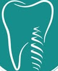
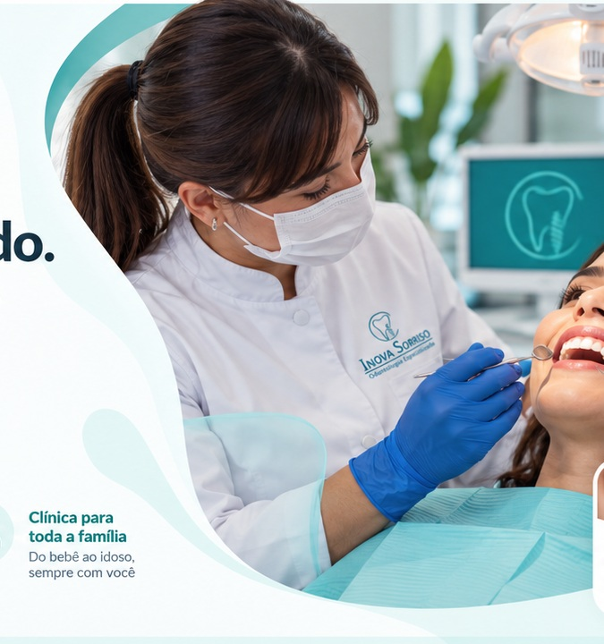
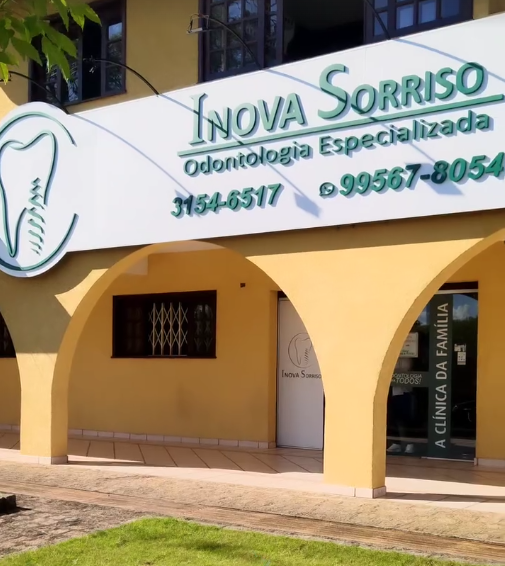
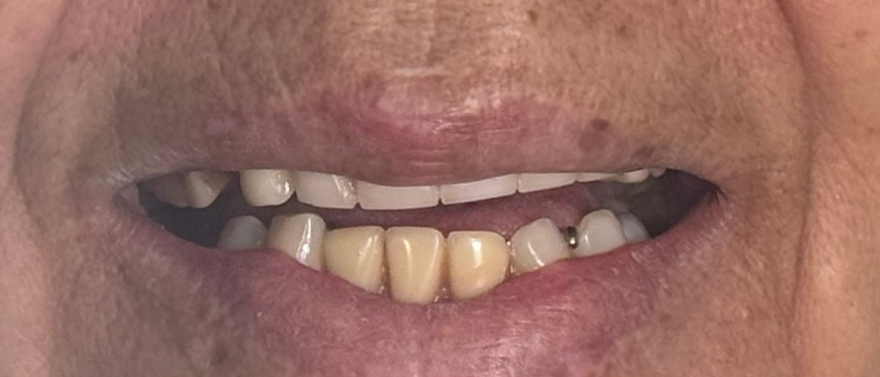

◯
Ortodontia
Planejamento para alinhamento, função e acompanhamento do sorriso em diferentes idades.

Inova SorrisoODONTOLOGIA ESPECIALIZADANa Inova Sorriso você encontra atendimento especializado em estética, reabilitação, ortodontia, implantes e cuidados odontológicos para toda a família.

Da prevenção à reabilitação, diferentes possibilidades de cuidado podem ser reunidas em um único acompanhamento, sempre com indicação individualizada após avaliação clínica.
Planejamento para alinhamento, função e acompanhamento do sorriso em diferentes idades.
Alternativas para recuperação funcional e estética em casos de perda dentária.
Planejamento estético para harmonização do sorriso de forma individualizada.
Reabilitação do sorriso com foco em função, conforto e estética.
Acompanhamento periódico, higiene e orientação para preservar a saúde bucal.
Rotina de prevenção e manutenção para apoiar a saúde do sorriso.

Na Inova Sorriso, o cuidado pode começar na infância e continuar ao longo da vida. A proposta é unir orientação, prevenção e tratamentos especializados em uma experiência próxima e acolhedora.
O comparativo abaixo utiliza as imagens fornecidas para esta apresentação. Na publicação definitiva, os casos e autorizações de uso devem ser validados pela clínica.

A Inova Sorriso reúne diferentes áreas da odontologia em um atendimento pensado para receber cada paciente com clareza, respeito e atenção às suas necessidades.
O objetivo é tornar o cuidado odontológico mais próximo, oferecendo acompanhamento para estética, função, prevenção e reabilitação em um ambiente preparado para toda a família.
Entre em contato pelo WhatsApp ou telefone e converse com a equipe para encontrar o melhor horário para sua avaliação.